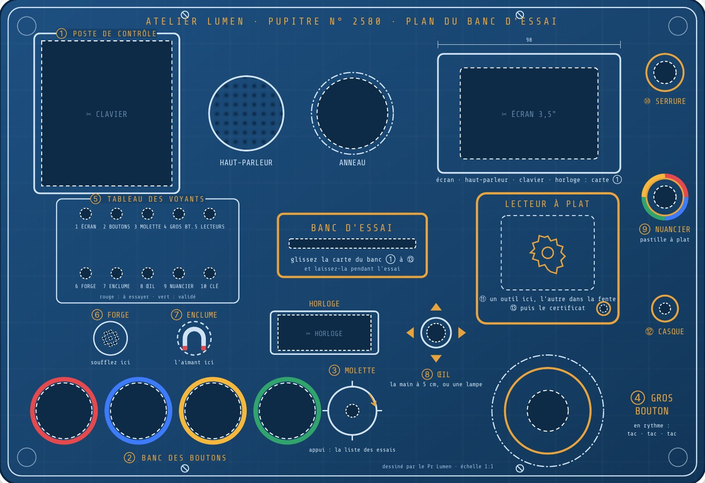

Treize organes, dix voyants, un coffre. Trente minutes pour que tout passe au vert.
2joueurs
20 à 30 minune demi-heure
★★★facile
L'Atelier du professeur LumenBienvenue
Avant d'entrer à l'atelier
Bienvenue à l'atelier
La mission qui essaie tout le pupitre : à jouer après le montage, ou avant une soirée, pour vérifier que tout répond.
Dans ce livret
I · La commande
La lettre du professeur, votre mission
3
II · Les bancs d'essai
Treize cartes, treize organes
5
III · Le binôme
Qui lit, qui fait ; les outils
7
IV · Le plan du banc
La façade et le tableau de bord
9
V · Le pupitre
Comment jouer
11
VI · La fiche de recette
À remplir au crayon
13
Avant de jouer
Allumez le pupitre, branchez le casque, et posez le plan du banc d'essai (facultatif : la mission se joue aussi sans façade).
Le certificat dans le tiroir : carte L'Atelier du professeur Lumen dans la fente, menu Tiroir secret, rangez-y la carte Certificat de conformité, poussez, validez au bouton vert. Sans tiroir : glissez-le dans une enveloppe E1.
Étalez les 13 cartes Banc d'essai, la Clé à molette, la Burette d'huile et Le carnet du professeur.
À portée de main : un aimant, un téléphone avec sa lampe, et les quatre pastilles du nuancier, imprimées en couleur.
Carte du monde dans la fente, et choisissez Jouer.
La règle d'or
Rien n'est caché, et rien n'est perdu. Un essai raté ne coûte rien : on retire la carte, on la repose, on recommence.
L'Atelier du professeur LumenI · La commande
Chapitre I
La commande
Sur l'établi, entre deux tournevis, une feuille vous attendait.
À l'atelier, tard le soir
Chers essayeurs,
Ça y est : j'ai fini de construire mon pupitre. Trois mois de soudures, de câbles et de nuits blanches !
Avant de le livrer, il faut essayer chacun de ses organes : les boutons, la molette, les voyants, les capteurs, les lecteurs de cartes, le casque, et même le tiroir secret.
Vous avez trente minutes. Chaque organe qui répond allume un voyant vert. Quand tout sera vert, le casque vous donnera le code du coffre… et le coffre, mon certificat.
Je compte sur vous.
Pr Lumen
P.-S. : ne soufflez pas trop fort sur la forge. Elle est sensible.
L'Atelier du professeur LumenI · La commande
Chapitre I
Votre mission
Trois étapes, une demi-heure.
ESSAYERchacun des treize bancs d'essai
VALIDERles dix voyants, jusqu'au dernier
OUVRIRle coffre du professeur
30:00
Le chrono part dès la présentation du professeur. L'horloge du pupitre l'affiche, et l'anneau de lumière égrène les minutes.
Gagner
Validez les onze premiers bancs, dans l'ordre qui vous plaît, en commençant par le Poste de contrôle.
Quand tout est vert, le Casque vous donne le code du coffre.
Le Coffre s'ouvre : posez le certificat sur le lecteur à plat.
La plaque du pupitre
Le professeur grave un numéro de série sur chacune de ses machines. Le Poste de contrôle vous le demandera : le voici.
Atelier Lumen
Pupitre des Énigmes
N° de série
2580
Modèle 2026 · 5 V · 3 A
L'Atelier du professeur LumenII · Les bancs d'essai
Chapitre II
Les bancs d'essai
Glissez la carte d'un banc dans la fente, et laissez-la en place pendant l'essai. La consigne est lue à voix haute et écrite à l'écran.
1
Poste de contrôle à faire en premier
Écran, haut-parleur, clavier, horloge
Tapez le numéro de série du pupitre ; l'horloge l'affiche.
2
Banc des boutons
Les quatre boutons de couleur
Rejouez la suite de couleurs, puis tenez les quatre boutons ensemble.
3
Banc de la molette
La molette et son bouton
Ramenez le compteur à zéro, puis réglez un chiffre et appuyez.
4
Banc du gros bouton
Le gros bouton rouge
Écoutez le rythme de trois coups, puis tapez-le en mesure.
5
Tableau des voyants
Les dix voyants
Allumez-les un à un, touches 1 à 9 et 0.
6
La forge
Le capteur de souffle
Soufflez deux secondes sur la grille FORGE, bouche grande ouverte.
7
L'enclume
Le capteur d'aimant
Posez un aimant à plat, deux secondes, sur la marque ENCLUME.
L'Atelier du professeur LumenII · Les bancs d'essai
8
L'œil
Le capteur de gestes et de lumière
La main au-dessus de l'ŒIL, dans le sens de la flèche, quatre fois. Puis une lampe de téléphone.
9
Le nuancier
Le capteur de couleur
Les pastilles une à une : rouge, bleu, vert, jaune. Une mauvaise pastille ? L'écran dit ce que le capteur voit.
10
La serrure
L'interrupteur à clé
Tournez la clé d'un quart de tour.
11
Banc des lecteurs
La fente et le lecteur à plat
Deux outils à la fois : la clé à molette dans la fente, la burette sur le lecteur à plat.
12
Le casque quand tout est vert
Le casque
Un seul joueur écoute, l'autre note. Le message ne passe qu'une fois.
13
Le coffre pour finir
Le tiroir secret et sa lumière
Le code entendu au casque ouvre le tiroir.
Un banc après l'autre
Un banc déjà validé le dit, et vous envoie au suivant. Perdus ? Un appui sur la molette, hors essai, affiche les treize bancs, faits ou non.
L'Atelier du professeur LumenIII · Le binôme
Chapitre III
Le binôme
Pas de rôle secret à l'atelier : deux essayeurs, deux casquettes, que l'on s'échange à chaque banc.
Banc
1
2
3
4
5
…
Joueur A
lit
fait
lit
fait
lit
…
Joueur B
fait
lit
fait
lit
fait
…
Le lecteur un banc sur deux
Les yeux sur l'écran, la voix pour guider.
Il lit la consigne, surveille les voyants et l'horloge, et dit à l'opérateur quand recommencer.
L'opérateur un banc sur deux
Les mains sur le pupitre.
Il fait le geste : tape, tourne, souffle, pose, appuie. Il ne lit pas l'écran : il écoute le lecteur.
Le conseil du professeur
Échangez vraiment : chacun doit avoir tenu la molette, soufflé sur la forge et tourné la clé. C'est ainsi qu'on connaît sa machine.
Bien démarrer
Asseyez-vous côte à côte, face au pupitre : l'un voit l'écran, l'autre a les mains libres.
Le Poste de contrôle d'abord : il vérifie l'écran, le son et le clavier dont dépend tout le reste.
Ensuite, les bancs dans l'ordre qui vous plaît. Gardez le Casque et le Coffre pour la fin.
L'Atelier du professeur LumenIII · Le binôme
Les outils de l'atelier
Trois cartes Outil, à glisser dans la fente ou à poser sur le lecteur à plat.
Clé à molette banc des lecteurs
L'outil de la fente.
À glisser dans la fente pendant que la burette est posée.
Burette d'huile banc des lecteurs
L'outil du lecteur à plat.
À poser sur le lecteur à plat, en même temps que la clé à molette.
Certificat de conformité pour finir
Rangé dans le tiroir secret avant la partie.
Posé sur le lecteur à plat, il termine l'essai.
Le carnet du professeur aide
Les notes de Lumen, pour qui bloque.
Glissez la carte dans la fente : les trois premiers conseils sont gratuits, les suivants coûtent 2 minutes.
Les accessoires
Un aimant pour l'enclume : le fer à cheval aimanté, ou un simple aimant de réfrigérateur.
Un téléphone et sa lampe, pour l'œil.
Les quatre pastilles du nuancier, imprimées en couleur et découpées (fiche du maître du jeu).
L'Atelier du professeur LumenIV · Le plan du banc
Chapitre IV
Le plan du banc d'essai
Le pupitre s'habille du plan d'ingénieur du professeur. Rien n'y est caché : la mission essaie tout.

Chaque organe porte le nom et le numéro de son banc, de ① à ⑬.
① Poste de contrôle · clavier, écran, horloge
② Banc des boutons · les quatre couleurs
③ La molette · sous l'horloge
④ Le gros bouton · en bas à droite
⑤ Tableau des voyants · dix, en deux rangées
⑥ La forge · ⑦ L'enclume
⑧ L'œil · entre les flèches
⑨ Le nuancier · ⑩ La serrure
⑪ Banc des lecteurs · la fente au centre, le lecteur à plat à droite · ⑫ Le casque · ⑬ Le coffre, dessous
L'Atelier du professeur LumenIV · Le plan du banc
Le tableau de bord
Les dix voyants suivent l'essai. Rouge faible : à essayer. Vert : validé. Ici, quatre organes déjà validés.
TABLEAU DES VOYANTS
1 écran clavier
2 boutons
3 molette
4 gros bouton
5 lecteurs
6 forge
7 enclume
8 œil
9 nuancier
10 clé
À savoir
Le Tableau des voyants n'a pas de voyant à lui : il les allume tous en blanc, puis chacun reprend sa couleur.
La lumière sous la boîte respire en ambre pendant l'essai, et passe au vert quand les onze premiers bancs sont faits.
Le Casque et le Coffre ne répondent qu'une fois tout le tableau au vert.
Un organe absent de votre pupitre ? Le maître du jeu le valide depuis le panneau Wi-Fi (Débloquer).
Un appui sur la molette
BANCS D'ESSAI4 / 13
✓ Poste de contrôle✓ Banc des boutons✓ Banc de la molette✓ Banc du gros bouton○ Tableau des voyants○ La forge○ L'enclume○ L'œil
L'Atelier du professeur LumenV · Le pupitre
Chapitre V
Le pupitre
Chaque organe, et la façon de s'en servir.
La fenteUne carte Banc d'essai pour lancer un essai, un outil, ou le carnet du professeur.
Le lecteur à platPosez-y l'outil ou le certificat, bien à plat.
Clavier, horlogeTapez les codes : l'horloge les affiche, * efface.
Les boutonsQuatre couleurs, et le gros bouton rouge.
La moletteTournez pour régler, appuyez pour valider. Hors essai : la liste des bancs.
La forgeSoufflez sur la grille, bouche ouverte, comme pour faire de la buée.
L'enclumeUn aimant posé à plat sur la marque.
L'œilLa main à plat, à 5 cm au-dessus, d'un bord à l'autre. Ou une lampe de téléphone braquée dessus.
Le nuancierLa pastille posée bien à plat sur le capteur.
La serrureLa clé, un quart de tour.
Le casqueQuand le pupitre le demande, un seul joueur le met.
L'Atelier du professeur LumenV · Le pupitre
Pendant l'essai
Un essai ratéRien de perdu : retirez la carte du banc, reposez-la, et recommencez.
Les imprévusUn atelier a ses caprices. Écoutez bien la consigne : parfois, il faut surtout ne plus rien toucher.
Le carnetSa carte dans la fente quand vous bloquez : 3 conseils gratuits, puis 2 minutes chacun.
Le tempsÀ cinq minutes de la fin, le professeur vous prévient. À zéro, il vous donne la solution.
La finLe certificat sur le lecteur à plat : le professeur vous décerne votre rang. Repoussez ensuite le tiroir.
Les rangs
Ingénieurs en chef10 min ou plus restantes, aucun conseil payant
Techniciens confirmés3 min ou plus restantes
Apprentis de l'atelierpour tous les autres
Le conseil du concepteur
Gardez le panneau Wi-Fi ouvert pendant la partie : le Journal note chaque essai, et l'onglet Atelier montre les capteurs en direct. C'est le meilleur moyen de régler un capteur trop timide.
L'Atelier du professeur LumenVI · La fiche de recette
Chapitre VI
La fiche de recette
À remplir au crayon pendant la partie : ce qui a marché, ce qui a résisté.
Organe
1er coup
Essais
Muet
Écran, haut-parleur
Clavier, horloge
Quatre boutons
Molette
Gros bouton
Dix voyants
Forge (souffle)
Enclume (aimant)
Œil (gestes, lampe)
Nuancier (couleur)
Interrupteur à clé
Fente, lecteur à plat
Anneau, lumière sous la boîte
Casque
Tiroir secret et sa lumière
L'Atelier du professeur LumenVI · La fiche de recette
Le code du coffre
Le temps restant
:
Les réglages à faire
Certificat de recette
Le pupitre ci-dessus a été essayé, organe par organe.
Le · Rang obtenu :
Les essayeurs :
et
L'Atelier du professeur LumenNotes
Notes
Le Pupitre des Énigmes
Missions · Mystères · Évasion
Le professeur Lumen a fini de construire son pupitre. Avant de le livrer, il faut tout essayer : boutons, molette,
voyants, capteurs, lecteurs de cartes, casque… et le tiroir secret. Quand tout sera vert, le coffre s'ouvrira.
La Disparition d'Éclipse
Le Haras des Trois Fers
★
Le Casse du Siècle
Monte-Carlo 1928
★★
La dernière nuit de Lord Edgar
Le Manoir Blackwood
★★
Désamorçage
Brigade de déminage
★★
Signal Perdu
Station Kepler-9
★★★
Dernier souffle
Sous-marin Narval
★★★
Banc d'essai
L'Atelier du professeur Lumen
★
2 joueurs · 20 à 30 minutes · pour tous · la mission qui essaie tout le pupitre